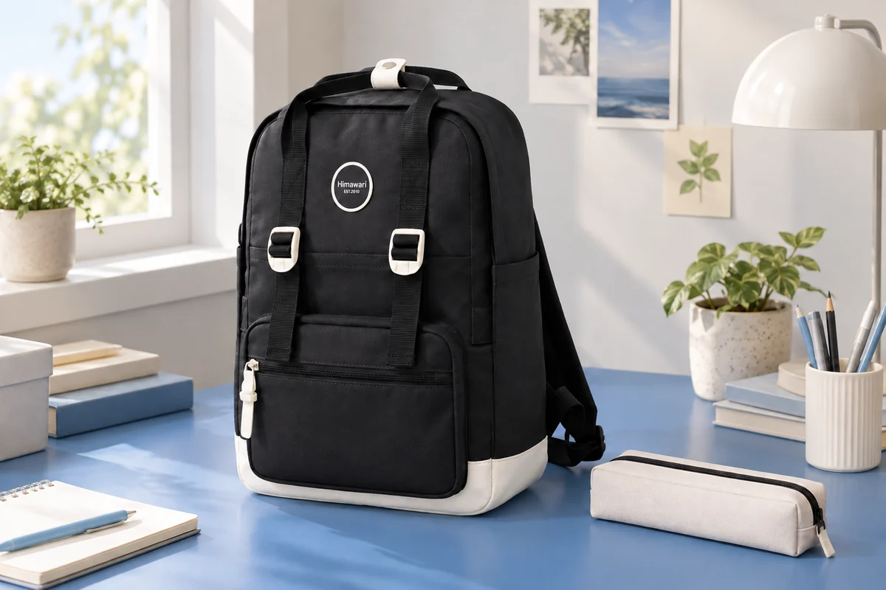

필통을 담은 백팩, 책과 안감에 닿는 면을 나누기
책 사이의 빈틈에 필통을 밀어 넣으면 가방의 겉모양은 정리된 듯합니다. 필통의 지퍼 손잡이가 안감 쪽에 남거나 단단한 도구가 든 부분이 책 모서리와 맞닿을 수도 있습니다. 필통은 안의 필기구를 모으는 소품이고 백팩은 그 묶음을 다른 물건과 함께 옮깁니다. 두 역할을 나누어 보면 어느 면을 먼저 살펴볼지 정하기 쉽습니다. 펜의 사용을 마친 상태로 필통을 닫은 다음, 가방 안의 자리를 비교해봅니다.
필기구는 뚜껑이나 펜촉을 해당 제품의 안내대로 정리하고 겉에 남은 잉크가 있는지 봅니다. 이상이 보이는 물건은 깨끗한 소지품과 구별해 필요한 안내를 확인합니다. 그다음 실제로 가져갈 도구를 필통에 담고 자연스럽게 닫히는지 살펴봅니다. 백팩에서는 정리된 필통의 바깥 모양과 여밈을 포함한 전체 외형을 기준으로 둡니다.
필통의 안쪽과 바깥쪽을 구분한다
필통 안에 긴 자나 모양이 다른 도구가 있으면 닫힌 뒤 어느 부분이 더 두꺼운지 봅니다. 필통의 한쪽이 팽팽하게 올라오거나 끝부분이 밖으로 남는 상태라면 도구와 보관품의 구성을 다시 확인합니다. 백팩을 꽉 채워 형태를 눌러 맞추기 전에 필통 자체가 사용할 상태인지 볼 수 있습니다. 도구를 줄이거나 다른 보관품으로 나누는 선택도 현재 준비물에 따라 정합니다.
필통 바깥의 지퍼 장식이나 손잡이가 어느 방향에 있는지도 살펴봅니다. 책과 나란히 두었을 때 딱딱한 부분이 표지와 닿는지, 안감 쪽으로 튀어나오는지 봅니다. 지퍼 손잡이를 임의로 떼거나 부품을 눌러 바꾸기보다 필통을 돌려 놓았을 때 접촉이 달라지는지 비교합니다. 작은 방향의 변화로 잡을 면과 닿는 면을 나눌 수 있습니다.
필통을 세워 넣을 계획이면 입구에서 어느 끝을 잡는지 정합니다. 긴 형태가 가방 깊이 내려가면 꺼낼 때 다른 책 사이를 더듬어야 할 수 있습니다. 가로로 놓을 계획이면 책 위에서 필통이 여밈 가까이 올라오는지 봅니다. 길쭉한 필통과 납작한 파우치형 필통은 같은 위치에서도 다른 모양으로 놓일 수 있으므로 실제 보관품으로 비교합니다.
책을 꺼낼 때 필통도 움직이는가
필통의 위치를 정한 뒤 책 한 권을 실제로 꺼내봅니다. 책과 함께 필통이 따라 올라오거나 옆으로 넘어지는지 봅니다. 필통을 사용하려면 책을 모두 빼야 하는지도 확인합니다. 같은 수업이나 업무에 쓰는 물건이어도 꺼내는 순간은 다를 수 있습니다. 책을 자주 바꾸는 날이라면 서로의 경로를 나누는 배치가 필요한지 생각해볼 수 있습니다.
가방 앞쪽의 작은 공간에 필통을 둘 경우에는 문구류 외에 무엇이 같이 있는지 봅니다. 열쇠나 충전 부품을 필통의 여밈 가까이에 더하면 잡을 면이 가려질 수 있습니다. 작은 물건을 하나씩 빈틈에 넣기보다 함께 사용할 도구를 정한 묶음으로 유지합니다. 필통 하나를 꺼냈다가 다시 넣었을 때 주변 소지품이 그대로 있는지 확인해보면 어느 위치가 필요한지 구체적입니다.
Himawari No.1088M은 필통과 책을 함께 준비할 백팩의 예로 참고할 수 있습니다. 카탈로그에는 겉감 나일론, 안감 폴리에스터로 안내되어 있습니다. 서로 다른 면이 있는 완성된 가방이므로 현재 안쪽 구조와 관리 표시를 함께 봅니다. 자신의 책과 닫힌 필통을 넣어보고 필통의 여밈이 어느 쪽에 놓이는지, 책을 꺼낼 손이 들어갈 여유가 남는지 살펴봅니다.

필통의 끝부분이 가방 바닥에 닿는지, 손잡이가 입구 쪽에 남는지 실제 준비물로 확인합니다. 내부 치수나 필통의 적합 여부가 필요한 경우에는 사용하는 필통의 외형과 함께 담을 책을 설명해 확인할 수 있습니다. 필통만 들어가는 공간을 찾은 다음, 평소 짐을 더한 상태에서도 꺼낼 동작이 이어지는지 보면 됩니다.
안감과 맞닿는 자리를 기억해둔다
백팩 안감에 필통이 닿는 면을 살펴보면 귀가 뒤 확인할 위치도 생깁니다. 필통을 늘 같은 쪽에 두었다면 그 주변의 안쪽 면과 바닥 모서리를 볼 수 있습니다. 눈에 보이는 흔적이 있다면 무엇이 닿았는지 현재 배치와 함께 기록합니다. 원인을 확인하지 못한 상태에서 강하게 문지르기보다 발견한 위치와 필통의 바깥 상태를 각각 살펴봅니다.
필통의 표면에 잉크나 다른 흔적이 남았으면 그 보관품의 관리 안내를 확인합니다. 백팩 안감에도 흔적이 있다면 가방의 표시를 따로 읽습니다. 같은 위치에서 만났더라도 두 물건의 처리가 같지는 않을 수 있습니다. 정리가 남은 필통을 원래 자리에 바로 되넣지 않고, 다음 외출에 쓸 물건과 현재 관리할 물건을 구별합니다. 필통을 비울 시점도 이때 정할 수 있습니다.
새 책이 들어오거나 필통을 바꾼 날에는 이전 배치를 다시 봅니다. 책의 높이가 달라져 필통을 받치던 면이 없어질 수도 있고, 새 필통의 손잡이가 가방 지퍼 가까이에 놓일 수도 있습니다. 어떤 물건을 바꾸었는지 알고 있으면 같은 가방을 쓰면서 달라진 접촉을 찾기 쉽습니다. 필통을 넣을 빈틈을 새로 찾는 대신 잡을 면과 다른 짐의 경로부터 확인합니다.
외출 중 필통을 사용한 뒤에는 정리된 상태로 닫아 백팩에 돌려놓습니다. 책상에서 사용한 펜을 가방 포켓에 임시로 하나씩 넣으면 필통의 위치와 별개로 새로운 접촉이 생깁니다. 준비한 묶음이 유지되는지 보고 안에 넣지 못한 도구가 있으면 그 이유를 확인합니다. 작업을 마친 물건이 한 필통으로 모이면 가방을 비울 때도 살펴볼 범위가 분명해집니다.
다음날 백팩을 닫기 전에는 책과 필통의 모양을 한 번 함께 봅니다. 필통의 지퍼가 지나갈 면, 책을 잡을 면, 안감과 맞닿는 면을 구별하면 됩니다. 모든 물건의 위치를 자주 바꿀 필요는 없지만, 꺼낼 때 함께 따라오는 소품이나 반복해 흔적이 보이는 자리는 조정할 수 있습니다. 필통을 닫는 준비와 백팩의 배치를 이어두면 다시 담을 때에도 같은 질문으로 자리를 고를 수 있습니다.